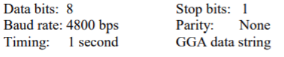
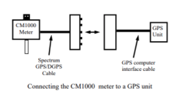
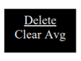
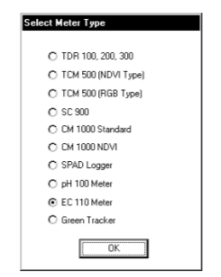

Để nhiệt độ của CM1000 cân bằng với môi trường thực vật trước khi lấy mẫu. Ví dụ, bảo quản đồng hồ qua đêm trong kho dụng cụ đông lạnh và sau đó ngay lập tức đọc khi vào ấm nhà kính sẽ dẫn đến dữ liệu không hợp lệ. Khi CM1000 được bật lần đầu tiên, pin (Pin ở mức __%) sẽ xuất hiện trên màn hình LCD. Có sẵn phần trăm năng lượng pin giả định pin kiềm là đang được sử dụng. Nếu dùng pin NiCd có thể sạc lại , năng lượng pin có sẵn sẽ ít hơn hiển thị. Nếu như trình ghi nhật ký chưa được bật, sẽ chuyển sang chế độ đọc bình thường. Để ghi lại dữ liệu và hệ thống định vị toàn cầu (GPS), bộ ghi dữ liệu trước tiên phải được bật thông qua phần mềm. Nếu trình ghi nhật ký đã được bật, cường độ pin và lượng bộ nhớ còn lại (Bộ nhớ __% FULL) sẽ hiển thị. Nếu dữ liệu GPS cũng đang được ghi lại, máy đo sẽ hiển thị trạng thái của tín hiệu GPS. Đồng hồ đo sau đó sẽ chuyển sang chế độ đọc bình thường. QUAN TRỌNG: Khi kết nối đồng hồ với một bộ thu GPS bên ngoài, bộ thu phải được bật nguồn, đã định vị các vệ tinh và được kết nối với đồng hồ trước khi bật đồng hồ (xem phần Kết nối với thiết bị GPS P. 6).
Chức năng trình ghi nhật ký tùy chọn phải được bật bằng cách sử dụng phần mềm Field Scout để ghi lại tín hiệu GPS (xem Cài đặt đồng hồ trên trang 14). Thiết bị GPS phải được cắm vào CM1000 và hoạt động khi đồng hồ được bật lần đầu tiên. Nếu một tín hiệu GPS được tìm thấy khi khởi động, logger sẽ tìm kiếm tín hiệu GPS cho mỗi lần đọc. Nếu không tìm thấy tín hiệu GPS khi đồng hồ được bật lần đầu tiên, đồng hồ sẽ không tìm kiếm đồng hồ khi thực hiện các bài đọc, do đó tiết kiệm thời gian khi lấy các dữ liệu đọc. Trong trường hợp này, màn hình LCD sẽ hiển thị thông báo No GPS Found Đối với mỗi lần đọc, GPS sẽ được hiển thị ở phía dưới bên phải màn hình. Nếu tín hiệu GPS bị mất trong khi đang đọc, hoặc nếu hiệu chỉnh sai lệch được chỉ định bị mất, màn hình LCD sẽ hiển thị LOG thay vì GPS trong góc dưới bên phải của màn hình. Trong thời gian đọc tiếp theo, đồng hồ sẽ lại tìm kiếm tín hiệu GPS và khi tìm thấy, sẽ lại hiển thị GPS. Cài đặt GPS Đơn vị GPS của bạn phải được đặt cho đầu vào / đầu ra NMEA. Nếu đồng hồ gặp sự cố khi nhận tín hiệu GPS, hãy kiểm tra xem thiết bị GPS có các cài đặt sau:
Cần có cáp GPS / DGPS (mục # 2950CV5) để kết nối CM 1000 mét với thiết bị GPS. Cáp này có số 9- chân kết nối đực và một chân âm thanh nổi kết nối với cổng dữ liệu của đồng hồ đo. Bạn cũng sẽ cần một cáp cho phép thiết bị GPS để kết nối với cổng nối tiếp nam 9 chân. Nếu cáp không đạt tiêu chuẩn với đơn vị GPS của bạn, nó nên có sẵn từ nhà sản xuất. Cáp này thường được sử dụng để tải thông tin từ máy tính lên thiết bị GPS. Các thành phần này phải được kết nối như hình bên dưới

Nút BẬT / TẮT bật đồng hồ và tắt. Khi đồng hồ được bật, nó sẽ hiển thị trạng thái pin cho 3 giây. Sau đó màn hình sẽ hiển thị số lượng bộ nhớ có sẵn và trạng thái của kết nối GPS. Đồng hồ sau đó đi vào chế độ đọc bình thường.
THẬN TRỌNG: Nếu đồng hồ không hoạt động trong 20 phút, nó sẽ tự động tắt để tiết kiệm điện. Khi nào đồng hồ bị tắt nguồn, với nút BẬT / TẮT hoặc do không hoạt động, các giá trị AVG và N được đặt lại về 0 (xem Chế độ đọc bình thường)
Khi các phép đo chất diệp lục được thực hiện, tối đa 99 số đọc được lưu trữ trong bộ nhớ ngắn hạn của đồng hồ đo. Đây sẽ là các bài đọc được thực hiện kể từ khi đồng hộ được bật hoặc nút Delete / Clear Avg được nhấn. Nút này tách biệt với dữ liệu nhật ký nội bộ. Có thể xem lại các bài đọc trong bộ nhớ ngắn hạn bằng cách nhấn vào nút DATA RECALL. Với mỗi nhấn nút, màn hình LCD sẽ hiển thị điểm dữ liệu (giá trị INDEX và BRT). Lần sau kích hoạt được nhấn, màn hình LCD sẽ trở lại đọc bình thường và giá trị N hiện tại sẽ được hiển thị cùng với mức trung bình đã được cập nhật.
Khi nhấn nút DELETE / CLR AVG và ngay lập tức nhả ra, điểm dữ liệu cuối cùng sẽ bị xóa khỏi bộ nhớ ngắn hạn và chạy lại trung bình. Ép và giữ nút này sẽ đặt lại trung bình chạy (AVG) và giá trị N về 0.
Thực hiện các bài đọc
Khi đồng hồ đo đang bật, nhấn vào nút kích hoạt ở mặt trước của tay cầm sẽ kích hoạt các tia laser nhắm mục tiêu và sẽ gây ra cơ chế đo lường và tính toán để trở thành "Trực tiếp". Tức là, trong khi bấm, người dùng có thể thấy INDEX (xem bên dưới) được cập nhật liên tục khi các tia laser nhắm mục tiêu được di chuyển xung quanh bề mặt lá. Việc nhả khóa kích hoạt trong khi đọc INDEX và kết hợp số đọc đó vào mức trung bình đang hoạt động và bộ nhớ của nhật ký.
LƯU Ý: Các bài đọc chỉ nên được thực hiện trên từng lá đơn lẻ. Các phép đo mức độ tán được khuyến khích bởi Công nghệ Spectrum chỉ dành cho cỏ có kết cấu mịn. (Xem Quản lý ánh sáng)
Khi ở chế độ đọc bình thường, màn hình LCD của CM1000 sẽ hiển thị giá trị chỉ số diệp lục, độ sáng từ cảm biến ánh sáng xung quanh, mức trung bình hiện tại và cho biết liệu trình ghi nhật ký có đang hoạt động hay không. Các nội dung của màn hình LCD được giải thích bên dưới.
INDEX
Chỉ số diệp lục CM 1000 được báo cáo trên thang đo từ 0 đến 999. Giá trị INDEX đo độ xanh tương đối của lá. Giá trị này vẫn còn trong bộ nhớ ngắn hạn của đồng hồ đo cho đến khi nó bị xóa hoặc đồng hồ đo bị tắt (xem Thao tác bàn phím). Nếu trình ghi nhật ký được bật, giá trị INDEX cũng được ghi lại trong bộ nhớ của nhật ký.
BRT
Phản ứng của cảm biến ánh sáng xung quanh được hiển thị dưới dạng giá trị chỉ số độ sáng (BRT) từ 0 - 9. Giá trị BRT của một hoặc nhiều cho thấy rằng có ít nhất 250 đến 300 µmol · m-2 · s-1 của PAR (bức xạ hoạt động quang hợp) ánh sáng có sẵn. Đây là mức ánh sáng tối thiểu tại đó máy đo rất hữu ích. Ở mức độ ánh sáng xung quanh thấp, chỉ số đọc có thể bị nghi ngờ Full sun nên trả về Giá trị BRT từ bảy đến tám. Bởi vì cách CM1000 ước tính hàm lượng diệp lục, mức độ ánh sáng cao hơn cho phép phân giải cao hơn trong INDEX. (Cũng xem Quản lý ánh sáng)
LƯU Ý: Môi trường xung quanh quá sáng hoặc ánh sáng phản chiếu sẽ bão hòa các cảm biến ánh sáng và do đó gây ra các bài đọc sai. Khi cảm biến ánh sáng gần điểm bão hòa, màn hình LCD thông báo ERROR, EXCESSIVE LIGHT sẽ hiện ra.
AVG và N
Khi mỗi lần đọc được thực hiện, tức là mỗi lần kích hoạt được phát hành, kết quả đọc INDEX của diệp lục vào trung bình đang hoạt động (AVG) và số mẫu (N) được tăng dần. AVG và N hiện tại đều là hiển thị ở dòng dưới cùng của màn hình LCD. Mặc dù N có thể tăng lên đến 250, nhưng chỉ tối đa là 64 bài đọc INDEX (N064) có thể được sử dụng để tạo đang chạy AVG. Nếu có hơn 64 bài đọc được thực hiện trước đó bộ nhớ ngắn hạn bị xóa, màn hình sẽ hiển thị AVG = - - -. Tuy nhiên, xóa một bài đọc INDEX khỏi trí nhớ ngắn hạn (do đó làm cho một AVG mới được tính toán) không giải phóng dung lượng bộ nhớ để lưu trữ thêm 1 bài đọc -. Nói cách khác, mức trung bình không được tính nếu kích hoạt đã được nhấn nhiều hơn 64 số lần mà không xóa mức trung bình (xem Thao tác bàn phím).
Các bài đọc INDEX hợp lệ có thể được thực hiện ngoài giá trị N lớn nhất là 250. Nhưng N sẽ không tiếp tục tăng trừ khi toàn bộ chuỗi dữ liệu hiện tại bị xóa, đặt lại N về 0.
LOG
Trình ghi nhật ký phải được bật để tải xuống dữ liệu vào PC (Xem Cài đặt đồng hồ đo). Biểu tượng LOG sẽ được hiển thị ở góc dưới bên phải khi tính năng này được kích hoạt. FIELD SCOUT
Cổng dữ liệu ở mặt dưới của CM 1000 meter có thể được tiếp cận bằng cách tháo vít nhựa. Nó là thông qua cổng này mà đồng hồ đo được kết nối với PC hoặc với thiết bị GPS.
Kết nối với PC
Phần mềm CM 1000 đi kèm với cáp PC màu đen. Cáp này kết nối với cổng USB của máy tính của bạn và với cổng máy tính của đồng hồ đo. Cấu hình của đồng hồ đo có thể được sửa đổi bằng cách nhấp vào nút Cài đặt đồng hồ (xem Cài đặt đồng hồ,). Cổng Com, Các nút Loại đồng hồ, Tải xuống, Xóa bộ nhớ và Cài đặt đồng hồ được giải thích trong phần Thanh công cụ chính
Lưu ý: Trước năm 2014, đồng hồ được xuất xưởng với màu xám cáp kết nối với cổng nối tiếp 9 chân. Cáp này sẽ vẫn hoạt động nhưng có thể yêu cầu adapter USB-to-serial
Loại đồng hồ đo
Phần mềm Field Scout hỗ trợ tất cả data logging của công nghệ quang phổ cầm tay. Chắc chắn rằng bạn chọn CM 1000 Meter từ màn hình Select Meter Type
Cổng Com
Cáp phần mềm màu đen kết nối đồng hồ đo với cổng máy tính . Cổng nằm ở đáy của mét. Nhấp chuột nút Com Port >> hộp thoại Port Selection xuất hiện. Chọn Cổng Com được chỉ định đến cổng dữ liệu máy tính. Ở hầu hết các máy là COM 1. Xem Xác định đúng Cổng Com để được hướng dẫn về cách xác định cổng nào chọn.
Cài đặt đồng hồ đo
Nhấp vào Meter Setting>> hiện hộp thoại màn hình Meter Setting. Meter Name sẽ là tiêu đề trên dòng đầu tiên của các tệp đã tải xuống.
Chức năng ghi nhật ký được bật bằng cách chọn hộp đầu tiên trong phần Logger Setting. Nếu hộp thứ hai trong này phần được chọn, trình ghi nhật ký sẽ chỉ lưu trữ dữ liệu GPS nếu nó thấy sự khác biệt. Nếu không tìm thấy khác biệt, thì chỉ số đọc diệp lục sẽ là được lưu trữ trong tệp dữ liệu. Sự điều chỉnh múi giờ phải là đã nhập vào ô cuối cùng.
Tải xuống
Sau khi nhấp vào Download, thanh tiến trình sẽ xác nhận dữ liệu đó đang được trích xuất từ trình ghi nhật ký. Khi hoàn thành, hộp thoại Save Data As sẽ hiện ra để đặt tên và chọn một thư mục lưu.
Khi tệp đã được được lưu, phần mềm sẽ cung cấp cho bạn tùy chọn ngay lập tức xem tập tin. Tệp dữ liệu là được lưu trữ dưới dạng tệp văn bản có thể được xem trong bất kỳ trình soạn thảo văn bản hoặc phần mềm bảng tính nào.
Dọn dẹp bộ nhớ
Dữ liệu không tự động bị xóa khỏi trình ghi nhật ký bộ nhớ sau khi tải xuống. Nút Clear Memory xóa tất cả dữ liệu khỏi bộ nhớ.
Dữ liệu được lưu trữ trong các tệp văn bản được phân tách bằng dấu phẩy. Này có thể mở tệp bằng phần mềm chỉnh sửa văn bản (ví dụ: Microsoft Word) hoặc phần mềm bảng tính (ví dụ: Excel).
Hai dòng đầu tiên của tệp dữ liệu cung cấp tên của người ghi và số sê-ri. Dòng thứ ba cho biết vĩ độ đó và kinh độ được tham chiếu. Dòng thứ tư hiển thị các tiêu đề cột cho phần còn lại của tệp dữ liệu.
Các phiên ghi nhật ký được bắt đầu và hoàn thành bằng cách chuyển bật và tắt máy đo. Thời gian bắt đầu phiên ghi nhật ký được biểu thị bằng dòng dữ liệu “Logger Started”. Nếu tín hiệu GPS là được tìm thấy khi bắt đầu phiên ghi nhật ký, một dấu thời gian được bao gồm trên dòng “Logger Started”.
Dữ liệu được tách thành 5 trường: Vĩ độ và Kinh độ (trống nếu thiết bị GPS không được kết nối), Số mẫu, Giá trị chỉ số diệp lục (trên thang điểm 0 - 999), và Độ sáng.
Máy tính Cổng giao tiếp tới cáp nào kết nối có thể được được xác định bằng cách sử dụng Cái kẹp giấy.
1. Ngắt kết nối nối tiếp cáp từ đồng hồ đo.
2. Để hiển thị màn hình Port Selection, hãy nhấp vào nút Com Port, chọn cổng com để kiểm tra và nhấp vào nút Port Test. Nhấp vào nút Test Port Now. Nếu thông báo “Connect OK” được hiển thị, một thiết bị khác (chẳng hạn như modem) có thể đã được kết nối đến cổng đó. Nếu thông báo “No Connection” được hiển thị, cổng này có thể là cổng được kết nối với cáp nối tiếp của bạn và bạn có thể tiến hành bước tiếp theo.
3. Đặt một chiếc kẹp giấy vào cuối của ghim nối tiếp để nó chạm vào cả đầu ghim và vùng kim loại giữa hai vòng đen. Một lần nữa nhấp vào Test Port Now. Nếu thông báo “Connection OK” bây giờ xuất hiện, đây là cổng com được kết nối với cáp nối tiếp của bạn.
LƯU Ý: Đồng hồ đo không đoản mạch chân nối tiếp. Do đó, khi nút Test Port Now được nhấp vào trong khi đồng hồ được kết nối, thông báo ”No connection" sẽ được hiển thị.
Ánh sáng mặt trời tự nhiên là nguồn ánh sáng tốt nhất để đo diệp lục theo độ phản xạ vì cả hai bước sóng đều có mặt với số lượng xấp xỉ bằng nhau và số lượng ánh sáng không đổi. Với nguồn sáng nhân tạo , người dùng phải biết rằng các nguồn ánh sáng khác nhau phát ra ánh sáng có chất lượng khác nhau. Ví dụ, đèn huỳnh quang phát ra nhiều ánh sáng xanh hơn và đèn sợi đốt đèn phát ra nhiều ánh sáng đỏ hơn. Các cảm biến ánh sáng trong CM1000 đủ nhạy để phát hiện sự làm mát của dây tóc trong bóng đèn sợi đốt là điện áp xoay chiều 120 vôn dòng điện luân phiên từ tích cực sang tiêu cực và ngược lại với tốc độ 60 Hz. Độ nhạy của đồng hồ đo với ánh sáng chất lượng cho phép máy đo ước tính chất diệp lục nội dung của lá.
Khi sử dụng ánh sáng nhân tạo, CM1000 cảm nhận ánh sáng số lượng sử dụng một khoảng thời gian có cân nhắc dòng điện xoay chiều 60 Hz được sử dụng bởi năng lượng điện các công ty ở Hoa Kỳ. Đồng hồ phải được định cấu hình lại để được sử dụng ở Châu u và các khu vực khác nơi 50 Hz AC điện được sử dụng. So với ánh sáng được tạo ra bằng dòng AC , nguồn sáng DC cung cấp một đầu ra ánh sáng ổn định. Trong trong một số tình huống, có thể dễ dàng sử dụng nguồn sáng DC hơn hơn là quan tâm đến bản thân với các phẩm chất tần số của AC.
Điều quan trọng là phải phát triển một phương pháp tiêu chuẩn để lấy bài đọc với CM1000. Lý tưởng nhất là mặt trời luôn ở sau lưng người dùng và ranh giới giữa mẫu và cảm biến gần như song song với tia nắng mặt trời. Các cảm biến ánh sáng xung quanh nằm sau các chấm Teflon màu trắng trong hộp hình chữ nhật màu đen ở trên cùng của hộp màu vàng. Các chấm Teflon khuếch tán ánh sáng xung quanh và bảo vệ cảm biến ánh sáng. Người dùng có thể nghiêng hộp đen để rằng các cảm biến ánh sáng xung quanh đang trực tiếp đối mặt với mặt trời, do đó tăng cường khả năng thu nhận ánh sáng xung quanh.
Giống như các cảm biến ánh sáng xung quanh, lá mục tiêu phải luôn được giữ vuông góc với tia nắng mặt trời để tối đa hóa độ phản xạ ánh sáng vào thấu kính của máy đo từ bề mặt lá. Tất cả các mẫu phải được lấy giống nhau lai lịch. Tốt hơn là giữ lá với một tay, không có bất cứ thứ gì ngay sau chiếc lá. Nếu như không khả thi, nền đen phẳng phải được sử dụng sau các mẫu lá. Với màu sáng hoặc nền bóng, người ta có thể không chỉ cảm nhận được đặc tính phản xạ của lá mà còn là phản xạ tính chất của nền chiếu qua lá
Tốt hơn là lấy mẫu với lá vẫn còn dính vào cây. Ảnh hưởng đến sự hấp thụ hoặc phản xạ ánh sáng do ứng suất nước cực đoan của các lá tách rời không được tính.
Các phép đo mức độ tán được khuyến nghị bởi Công nghệ quang phổ chỉ dành cho cỏ có kết cấu mịn. Khi thực hiện các phép đo trên cỏ, một quy trình đo lường nên bao gồm việc có mặt trời, mục tiêu và đồng hồ đo gần giống nhau mối quan hệ với nhau cho mỗi lần đọc. Vấn đề với việc cố gắng đo toàn bộ tán cây thì không tất cả các lá trong một tán thô đều lộ ra như nhau ánh sáng môi trường xung quanh. Vì ánh sáng phản chiếu từ tán cây đang được phản ánh theo nhiều hướng khác nhau và điều đó ánh sáng phản xạ đang được so sánh với môi trường xung quanh có sẵn ánh sáng, nó hoàn toàn cần thiết cho toàn bộ khu vực lấy mẫu và các cảm biến ánh sáng xung quanh phải chịu với cùng số lượng và chất lượng ánh sáng.